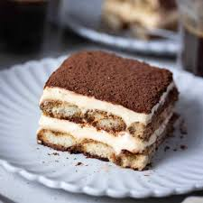

DESCRIPTION
Tiramisu is an Italian dessert that has layers of coffee-soaked ladyfingers and a cream made from mascarpone, eggs and sugar. Some versions are also flavored with alcohol such as Marsala wine, Fernet, rum, Cognac, brandy or coffee liqueur.INGREDIENTS
- Mascarpone
- Heavy Whipped cream
- Coffee
- Granulated Sugar
- Vanilla extract
- Cocoa powder
- Parmesan cheese.